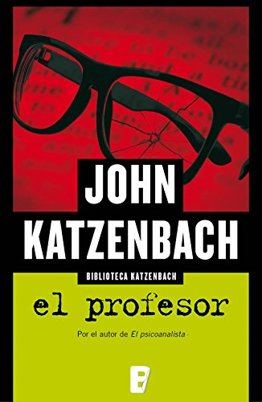

Libro de John Katzenbach
Este autor nos habla en sus libros de misterio e intriga, entre estos se encuentra EL profesor, donde Adrian Thomas es un profesor universitario retirado, al que acaban de diagnosticarle una demencia degenerativa que lo llevará pronto a la muerte. Jubilado, viudo y enfermo cree que lo mejor que puede hacer es quitarse la vida.
Pero al salir del consultorio del médico es testigo involuntario del secuestro de Jennifer Riggins, una conflictiva adolescente de dieciseis años con un largo historial de huidas, que desaparece sin dejar rastro dentro de una camioneta conducida por una mujer rubia.
El profesor Thomas se debate entre poner fin a su vida y ser útil una última vez antes de morir. Decide ayudar a encontrar a Jennifer e intentar darle la oportunidad de vivir su joven vida. Para eso debe sumergirse en el oscuro mundo de la pornografía en Internet.
Entre otros se pueden encontrar:
COMPRA YA!